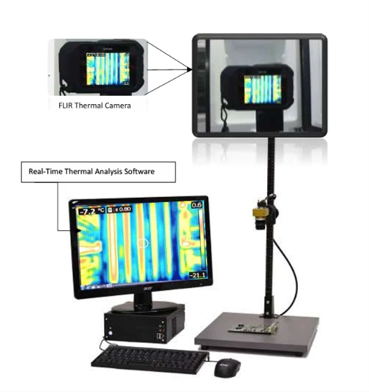
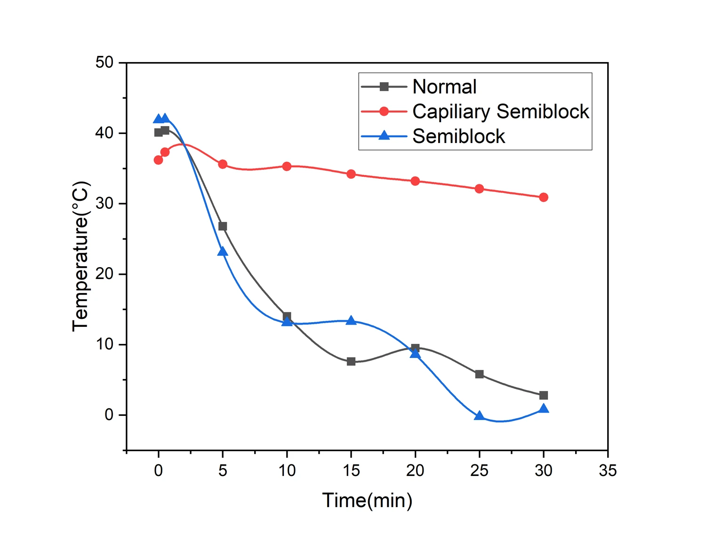

◉
Thermal diagnostics
Using infrared images and temperature-time signatures to distinguish normal operation from refrigeration faults.
Mechanical engineering · Research portfolio
I am a mechanical engineer working across industrial process development and applied research. My current interests include infrared thermography for refrigeration diagnostics, short-duration fault detection, computational fluid dynamics, and lightweight structural design.

Research agenda
My work combines hands-on manufacturing experience with measurement, numerical modelling, and data-led decisions.
Using infrared images and temperature-time signatures to distinguish normal operation from refrigeration faults.
Studying separation control and aerodynamic performance of modified low-Reynolds-number airfoils.
Connecting structural analysis, topology optimization, geometry reconstruction, and manufacturing constraints.
Research workflow
Whether the work is experimental or computational, the emphasis is on clear assumptions, traceable methods, and appropriately qualified conclusions.
Define the engineering problem and measurable outcome.
Build a controlled test or numerical model.
Extract features, compare cases, and quantify variation.
Check assumptions, sensitivity, and limitations.
Turn evidence into an engineering recommendation.
Selected projects
These selected projects illustrate the range of my research interests. Manuscripts are labelled by stage rather than presented as accepted publications.

THERMAL ANALYSISInfrared thermography and temperature-time patterns for non-destructive quality control in refrigeration systems.
Project details FINITE ELEMENT ANALYSIS
FINITE ELEMENT ANALYSIS
A simulation-led workflow connecting structural load cases, topology optimization, and manufacturable geometry reconstruction.
Project details CFD · AERODYNAMICS
CFD · AERODYNAMICS
Comparing dimple configurations and angle of attack to explore lift-to-drag trends at low Reynolds number.
Project detailsMy graduate-study goal is to deepen my ability to design reliable experiments, interpret complex thermal and mechanical behaviour, and develop methods that can move from research settings into engineering practice.
Selected research contributions
Conference contributions, thesis work, and ongoing manuscripts are separated so that the status of each contribution remains transparent.
1st International Conference on Agricultural Machinery and Bioresource Engineering (ICAMBE 2025). Poster PDF available.
View conference poster previewExperimental thermal imaging for industrial quality control; manuscript status should be updated when submitted or accepted.
View research & publication detailsGraduate research conversations
I am interested in graduate programs and research groups working on thermal systems, refrigeration, experimental diagnostics, CFD, FEA, and sustainable engineering.
Contact by email ↗